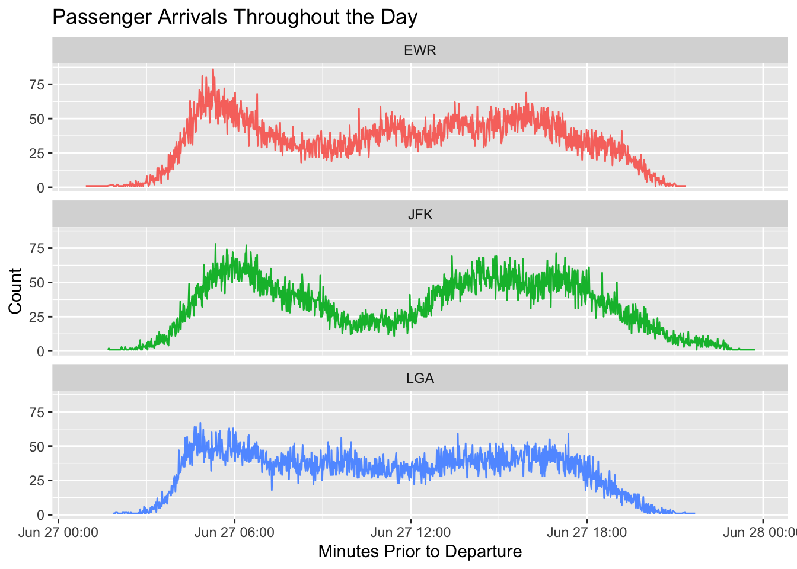

In this post, we continue our exploration of modeling passenger and baggage traffic in airports using publicly available data. To streamline our data processing, I created a simple R package flightanalytics. This package helps to build dataframes from the Planning Guidelines and Design Standards for TSA study.
For now, we will use the arrival curve and some carrier-level aggregated passenger and bag data from the TSA document. The flightanalytics package is used for storing the logic required to build these tables from the PDF document. By consolidating this logic into a package, we can easily reuse and extend it if we encounter more repetitive code patterns in future work.
I know “we” is just me and my wife right now.
Code
library(tidyverse)library(nycflights13)library(flightanalytics) # hey look thats newlibrary(ks) # this is new toojune27_flights <- flights |>mutate(dep_dttm = time_hour +minutes(minute)) |>filter(day ==27 , month ==6)arrival_curve <-get_pgds_arrival_curve() |>clean_arrival_curve()pax_bag_data <-get_pgds_passenger_bag_factors()
Recap of Arrival curve
Here’s a summary of the arrival curves from the previous post, which show the distribution using a continuous custom distribution:
One thing we touched on last time was using the Kernel Density Estimate (KDE). If you have every used plot(density(x)), you have used a KDE. You can learn more about it here, but to summarize it is a smoothing function to estimate the probability density function of a random variable.
Make it Simple
I failed Algebra I multiple times, and I still have trauma from Greek letters in grad school. I was someone who learned math and statistics more effectively through programming. It’s not for everyone (the way math is traditionally taught also isn’t for everyone), but I found everything easier to learn inside a for loop. Colors help too.
I’ll link to Wikipedia and other sources to detail the math used, because that is important too. Just learn however is best for you, and it doesn’t have to be how everyone else does it. If I add context it will be to make it as simple to grasp as possible, and I will never use the Greek alphabet.
A quick example
In this example, 100 values are sampled from a normal distribution. However, due to the relatively small sample size, the resulting distribution may not precisely match the true normal distribution. Interestingly, I set my anniversary date as the random seed for reproducibility, and it unexpectedly yielded a bimodal density in the sample. The flexibility of the smoothing function is what allows us to match the unique arrival curve shapes.
Code
# Generate example dataset.seed(0527) # For reproducibilitydata <-data.frame(value =rnorm(100, mean =5, sd =2))# Plot the histogram with density lineggplot(data, aes(x = value)) +geom_histogram(aes(y =after_stat(density)), binwidth =0.5, fill ="blue", alpha =0.5) +geom_density(color ="red", linewidth =1) +labs(title ="Histogram with Density Line",x ="Value",y ="Density") +theme_minimal()
Create Base Flight Schedule
At the moment, this code is some dplyr mess that should be wrapped into a function to clean the flight schedule into a usable format. The main takeaway is that we have a flight schedule with the estimated passengers and bags for each flight.
Previously, we applied a flat factor across the 10-minute arrival curve. Now, we’re adding some variance to enhance our modeling.
Each flight now has one of the three different types of arrival curves associated with it. With the number of expected passengers, we want to have a value of how many minutes prior to departure they arrive. To implement this, we’re utilizing purrr to apply the function ks::rkde to each row, adjusting for the number of passengers dynamically.
This approach enables us to introduce variability into our arrival curve modeling, enhancing the fidelity of our simulations and better capturing real-world scenarios.
june_27_kde_1 |>unnest(arrivals) |>ggplot(aes(arrivals, fill = arr_curve)) +geom_histogram(bins=50) +facet_wrap(~arr_curve, ncol =1, scales ='free_y') +scale_x_reverse() +theme(legend.position ='none' ) +labs(title ='Sampled Arrivals from Arrival Curve',subtitle ='Note: the y axis are on different scales due to the disproportionate amount of domestic flights',x ='Minutes Prior to Departure',y ='Count' )
# A tibble: 6 × 11
carrier origin dest dep_dttm passengers passengers_with_bag
<chr> <chr> <chr> <dttm> <dbl> <dbl>
1 UA EWR MIA 2013-06-27 20:10:00 127 67
2 UA EWR MIA 2013-06-27 20:10:00 127 67
3 UA EWR MIA 2013-06-27 20:10:00 127 67
4 UA EWR MIA 2013-06-27 20:10:00 127 67
5 UA EWR MIA 2013-06-27 20:10:00 127 67
6 UA EWR MIA 2013-06-27 20:10:00 127 67
# ℹ 5 more variables: num_of_bags <dbl>, arr_curve <chr>, .kde <list>,
# arrivals <dbl>, model_dttm <dttm>
Code
june_27_arrivals_long |>count(origin, model_dttm) |>ggplot(aes(model_dttm, n, color = origin)) +geom_line() +facet_wrap(~origin, ncol =1) +theme(legend.position ='none' ) +labs(title ='Passenger Arrivals Throughout the Day',x ='Minutes Prior to Departure',y ='Count' )

Journey to 10k
How many simulations do you need? I often see “this analysis was based of 10,000” simulations, but if your underlying function doesn’t actually match the real world – then there isn’t a number that will monte carlo your way out of it. The answer is, as always, it depends.
We are simulating one metric right now, maybe 1,000 is enough for this. Also what is the goal or intended outcome the model serves? If it is extreme tail end outcomes, 1,000 might not be enough. 100,000 might not be enough. The larger number of simulations will be important as we incorporate other metrics like load and bag factors to it.
Steps
Take the flight schedule and create a number of simulations that you want to do
Replicate each flight for the number of sims, this example uses tidyr::unnest() of a list column
Apply the sampling function for each passenger
Unnest again, and now you have the number of simulations and number of passengers in each row